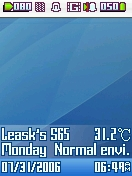
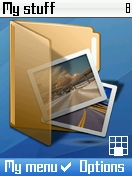
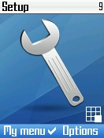
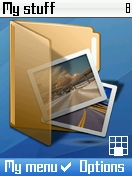
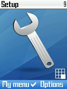

Apple Mac OS X Theme for Siemens 6x(132*176)
8/5/2006 5:24:38 PM
这是一套Siemens 6x系列的用户界面，包括主题(Theme)以及主菜单(FlexMenu)。
理论上适用于所有132*176分辨率的65系列西机(暂不兼容130*130的6x)。
这套UI是在Mac Mini(Mac OS X 10.4.7)上分离图片资源并PS加工完成。
因为喜欢Apple的Style，所以设计来自娱。
现分享出来，希望大家喜欢。
下面有效果图：
 


Download:
*图中待机画面效果还须配合补丁写入技术修改待机的显示程序，方法我将日后贴出。


 
